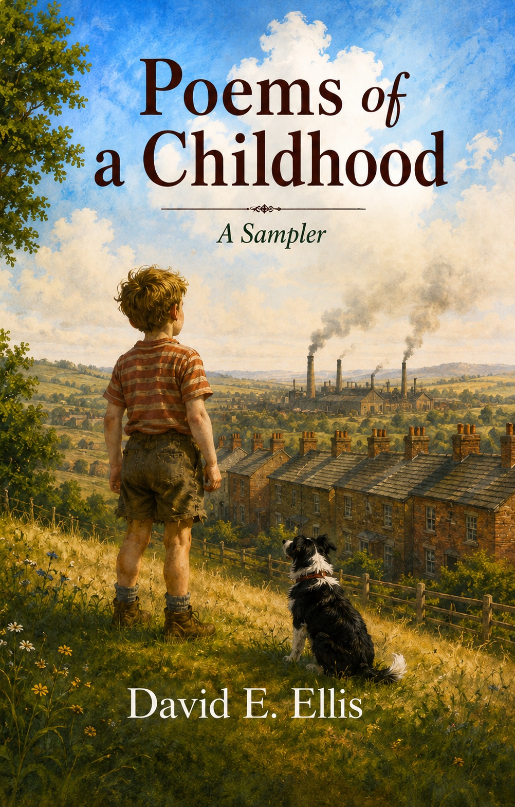

Poems of a Childhood — A Sampler is a small but quietly unexpected collection — six poems generated by artificial intelligence from personal prompts, each one rooted in the real memories of a boy growing up in working-class North West England during the late 1950s and early 1960s.
The prompts are the author's. The words are Claude's. The memories, in their own way, belong to all of us.
From the clatter of the rag and bone man's cart in the street, to a Saturday cinema full of pandemonium, to a fizzing bottle of Dandelion and Burdock lifted in a quiet kitchen — these are small things. Ordinary things. The kind of things that slip away quietly as the years pass, until something brings them rushing back.
This sampler is an introduction to a larger experiment — one that asks not whether artificial intelligence can write, but whether it can feel. Whether it can take a human memory and return something true.
If these six poems resonate with you, the full collection — Poems of a Childhood — contains many more poems, more prompts, and more memories, all rooted in the same ordinary, extraordinary world of a childhood long ago.